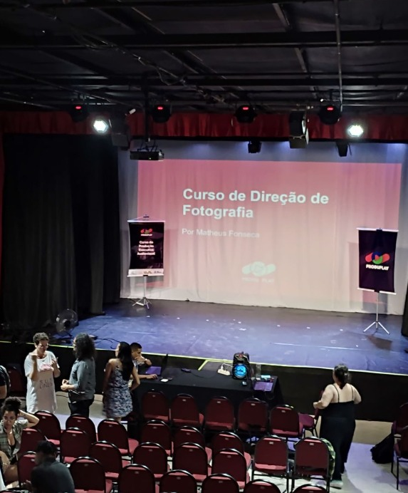
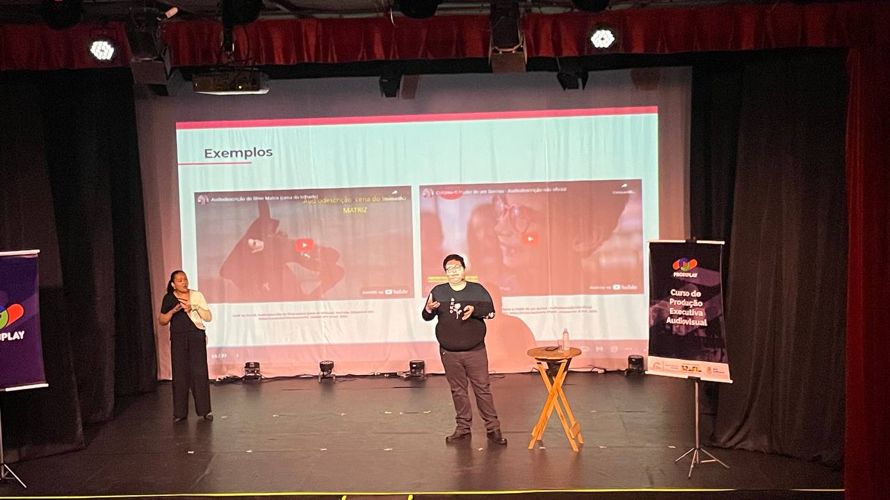
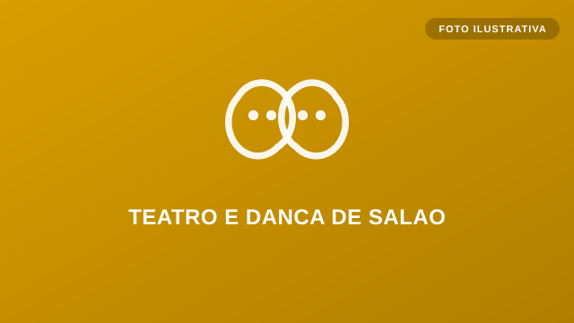
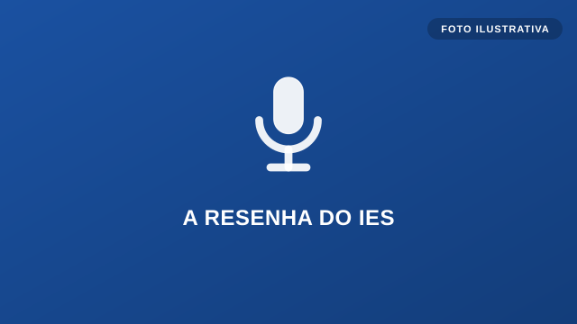
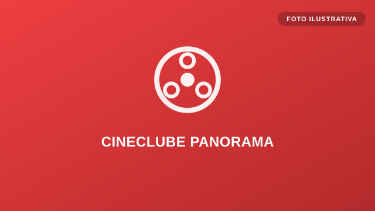
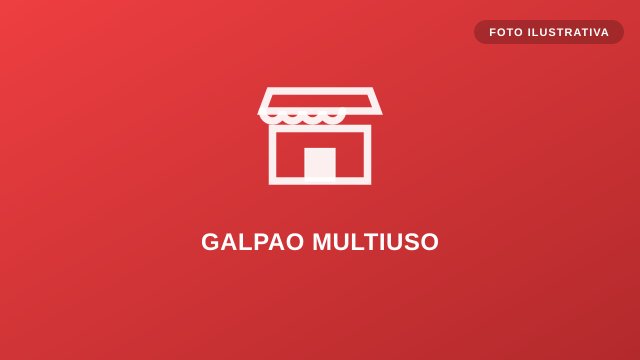
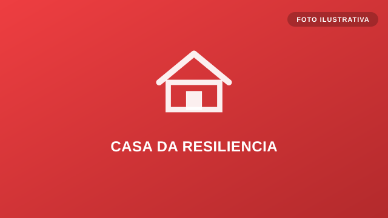
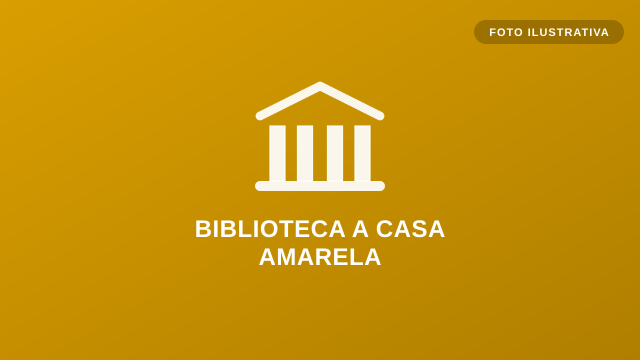

Esporte
Formação de alunos-atletas na Quadra Vini Jr., com disciplina, cooperação e superação.
O que fazemos
Três frentes que se conectam: esporte, educação e cultura — sempre de forma gratuita ou acessível.
Formação de alunos-atletas na Quadra Vini Jr., com disciplina, cooperação e superação.
Cursos gratuitos, leitura e formação que abrem portas para a comunidade.
Teatro, cinema, podcast e dança no Espaço Cultural Panorama.

Curso gratuito de audiovisual (podcast, drone, câmera, direção de arte) com a Produplay, via Lei Paulo Gustavo.
Saiba mais
Curso "Pensar Acessibilidade no Audiovisual", em parceria com a Produplay e a Lei Paulo Gustavo.
Saiba maisCampanha que arrecada livros para estruturar o acervo da futura Biblioteca A Casa Amarela.
Saiba mais
Turmas no Colubandê com mensalidades de base social e 10% das vagas como bolsas para áreas de risco.
Saiba mais
Produzido no estúdio do Panorama, valoriza as trajetórias de multiartistas fluminenses.
Saiba mais
Sessões de cinema com ingressos gratuitos ou populares, abrindo o teatro para a comunidade.
Saiba maisTransformar a Rua Odete São Paio em um grande corredor de cultura, com novos espaços para a cidade.

Espaço para feiras de negócios e eventos, fomentando a economia criativa de São Gonçalo.
Saiba mais
Orientação para adaptar moradias às mudanças do clima, reduzindo riscos para as famílias.
Saiba mais
Acervo físico e digital, oficinas de arte e sessões de cinema, em parceria com o Instituto Ciclos do Brasil.
Saiba mais